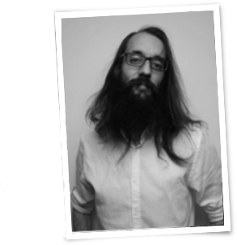

I am a senior software developer with 10+ years of experience, seeking
for new places to develop my craft. I'm an advocate for Agile Methodologies
and Software Craftsmanship, as well as a very active member of the Spanish
Agile community. Despite my leadership skills, my passion is coding.
- Education
-
University of Vigo
Major: Computer Science Engineering
Minor: Physics
Predoctoral studies: Artificial Intelligence
Courses: Pedagogical skills, bioinformatics, graphic design, free software, web frameworks, ...
- Skills
-
Software sculpting skills
Unit testing, pair programming, agile methodologies, full stack.
Personal skills
Ethics, team leadership, professionalism, value oriented.
- Experience
-
Trabeculae E.B.T. Head of IT/Developer - Ourense, Spain - 2008-2010
- Developed software for building three-dimensional models from bone microtomography
- Designed and developed core internal software for the company
- Developed a software for medical follow-up of patients after hip surgery
Agil-AZ CEO/Developer - Santiago de Compostela - 2010-2014
- Run the company from scratch. Managed to hire a small team of developers :-)
- Developed 40+ software projects, mostly for startups
- Mostly web development; also mobile apps and backend
- Explored and perfected the use of different methodologies: Scrum, Kanban, XP, etc.
Hermanos Karapatrov Software Sculptor - Milladoiro - 2011-2013
- Contributed to 10+ audiovisual projects
- Mostly real time image processing; also some web development and graphic design
- Kanban
SetPay Full Stack Developer - Santiago de Compostela - 2014-2017
- Contributed to development of front-end and back-end of the core products
- Trained other developers
- Methodology leader
- Mostly bank software, Java technologies and Angular
- Scrum
NoLegalTech The Tech Guy - Fully remote - 2018-today
- To the eyes of our customers, I do magic to create what they want from their ideas
- I also extinguish tech fires
- Mostly web development (full stack)
- Kanban
- Hobbies
- Chess, Maths, Books
- Hackathons and Coding Dojos
- Languages
- Native: Galician, Spanish
- Fluent: English
- Studied: French, German, Italian, Portuguese, Russian